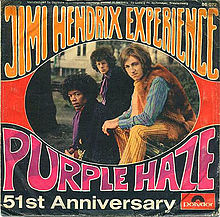

DRUGS turn you off, dull your senses, give you the strength to face another day in Death America, DOPE turns you on, heightens sensory awareness, sometimes twists them out of shape and you experience that too, gives you vision and clarity, necessary to create Life from Death
-Tom Coffin, Great Speckled Bird
Some of the most commonly known traits of the counterculture amongst the public are the fashion, music, sex and drugs. It is these elements that are the most easily visible and they are the ones that most caught on the with the mainstream youth culture. But what about these surface traits was running in opposition to mainstream U.S. culture ?
The counterculture saw Psychedelic drugs use as more than just a pleasant high. Famed LSD promoter Timothy Leary compared the usage of LSD to a spiritual experience and said it helped the user achieve a higher level of consciousness. Other members of the counterculture took this idea further and suggested wide usage of LSD and Marijuana would help promote social change. Psychedelic drugs were also pitted against the more socially acceptable substance abuse of the parents, such as cigarettes, alcohol, tranquilizers and amphetemines. The previously mentioned substances were framed as being bad for the body and the mind as opposed to substances like Marijuana or LSD which were harmless and good for the mind. Substances like nicotine and alcohol were meant to dull the senses to help people get through the unpleasant mainstream society. Psychedelic drugs instead expanded ones consciousness and freed one from the Amerikan Death Culture.
Though the counterculture tried to separate itself from the mainstream, it wasn't long until everyone else took notice and their ideas spread beyond the confines of their social group. Many other young people with less of a direct connection to the counterculture soon started adopting their music, fashion, practices and mannerisms. Some participants where worried about the increasing commercialization of their ideas and criticized those within and outside the culture for selling out. Some where bothered by the idea of even putting any sort of price tag on their idea and when the very first psychedelic shop opened in San Fransisco in 1966, it was met with some disapproval. Ironically enough however, by placing greater importance on things such as rock music and alternative fashions, the counterculture inadvertently ended up increasing the consumer demand for such goods.